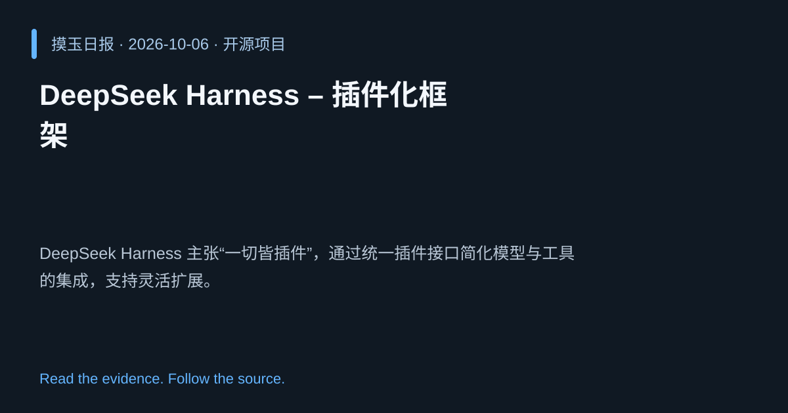

2026-10-06 · Asia/Shanghai · 开源项目 · #13
DeepSeek Harness – 插件化框架
deepseek-ai/deepseek-harness
DeepSeek Harness 主张“一切皆插件”，通过统一插件接口简化模型与工具的集成，支持灵活扩展。
为什么值得关注
统一插件机制降低集成门槛，加速 AI 代理生态建设。

热度 20.0 / 100；排名与评分保留该期记录。
2026-10-06 · Asia/Shanghai · 开源项目 · #13
deepseek-ai/deepseek-harness
DeepSeek Harness 主张“一切皆插件”，通过统一插件接口简化模型与工具的集成，支持灵活扩展。
统一插件机制降低集成门槛，加速 AI 代理生态建设。

热度 20.0 / 100；排名与评分保留该期记录。